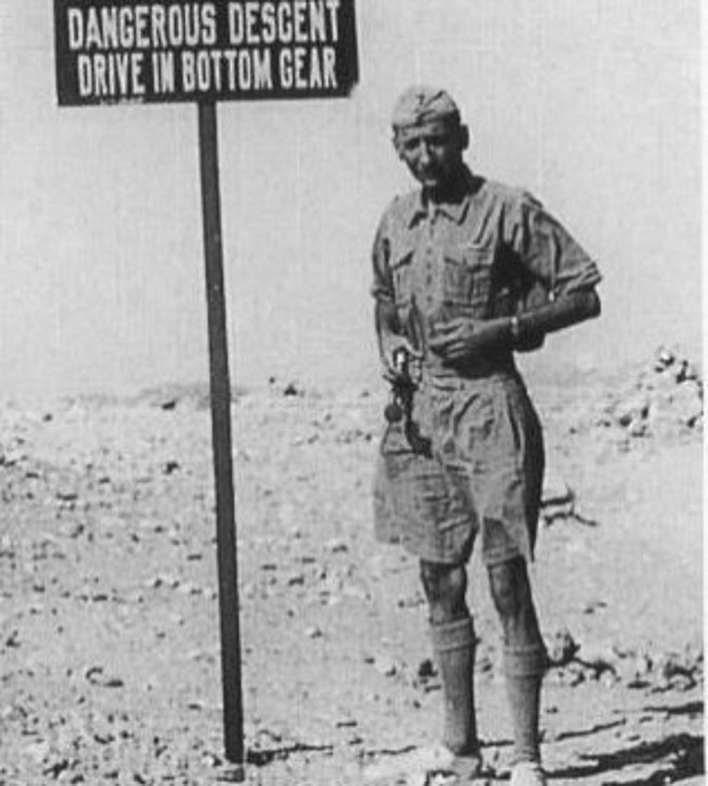
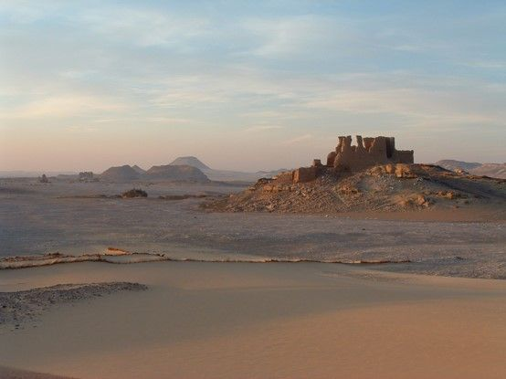

الصحراءالليبية.
تغطي الصحراء الغربية في مصر، أو الصحراء الليبية، نحو ثلثي مساحة البلاد، من البحر المتوسط شمالًا إلى الجلف الكبير جنوبًا، وتضم بحر الرمال الأعظم.
خالية فقطللنظرة الأولى.
غرب وادي النيل، على حدود ليبيا والسودان، يمتد أحد أكثر الأماكن جفافًا على الأرض. يبدو من الطريق خاليًا، لكن من يجتازه على مهل يكتشف جغرافيا غنية وتاريخًا إنسانيًا طويلًا.
خمس واحات كبرى، سيوة والبحرية والفرافرة والداخلة والخارجة ، مأهولة منذ ما قبل العصر الفرعوني. وكانت محطات لطرق القوافل التي ربطت وادي النيل بقلب أفريقيا.

خمس واحات،وصحراء واحدة.
لكل واحة على مساراتنا مياهها وقراها وآثارها.
قليلمن التاريخ.
مستكشفون وقوافل وحضارات تركت بصمتها في الواحات. ثلاثة فصول تقرؤها قبل السفر.

كبار المستكشفين
الرحلات الأسطورية لأحمد حسنين باشا والأمير كمال الدين ولازلو ألماسي.
اقرأ الفصل
درب الأربعين
طريق القوافل ذو الأربعين يومًا بين أفريقيا والنيل، تحفّه آثار رومانية ويونانية رومانية.
اقرأ الفصل
الواحات التاريخية
قلاع ومعابد وجبانات منسية في واحات مثل الخارجة.
اقرأ الفصلشاهدهابنفسك.
أخبرنا بتواريخك وطريقتك المفضلة في السفر. نرد عليك شخصيًا، عادةً خلال يوم، بمسار وعرض سعر.